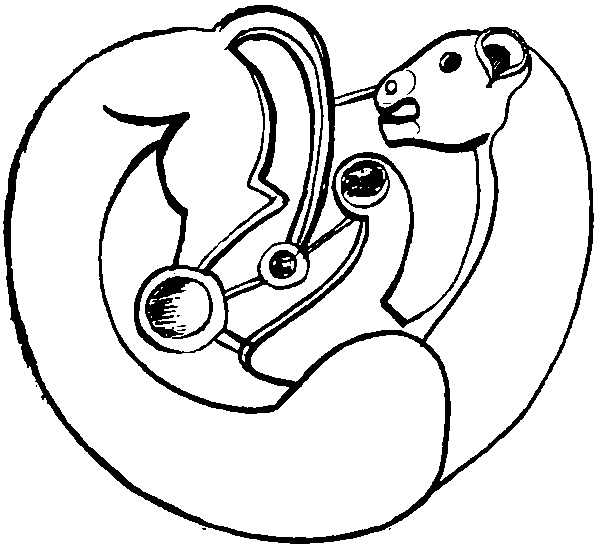

Ertesi sabah uyandık. Hepimizin başı çatlayacak gibi ağrıyordu. Bize neler olduğunu anlamaya çalıştık. Bir gece öncesini, savaşı, ölümü, diz boyu iğrençliği, bizim o iğrençliğe sırtımızı dönüp yiyip içtiğimizi yavaş yavaş anımsadık. Biz kalanlar, o sabah Sarkel kermeninden çıktık ve yirmi yıl boyunca bir daha bir kente girip yurt edinmedik, oturak olmadık. Bizler yine göçebe olduk. Bozkırda göçtük, konduk. Budun, daha önce Musa Yalvaç önderliğinde, ufacık Sina Çölü’nde tam kırk yıl dolaşmıştı. Dolaşmalara alışıktı. Ben Tengere Tardu Kağan’la birlikte, otluk suluk koca Oğuz Çölü’nde bunun yarısı kadar bir süre dolaşmaya kimse ses çıkarmadı. Dolaştık, dolaştık. Her dolaşmanın bir çözümü, bir çıkışı vardı. Aktürkler geçmişten öğreneceklerini öğrenmişti, bu kez kimse buzağıya filan tapmadı.
965 yılının o korkunç sıcak, yapışkan ve sinekli yaz günü, alabildiğimiz kadar yiyecekle ufak tefek mallarımızı, bulabildiğimiz hayvanlara yükledik. Yoksul koyunlar, köpekler bile, sırtlarına bağladığımız heybelerde ufak tefek taşıdılar. Kermende kalan son yaratık olan ve dışarı çıkmamak için ayak direyen bir eşek, itile kakıla dışarı çıkarıldığında, Nuh Yalvaç’ın gemisine doldurduğu yaratıklar elimde olmadan usuma düştü. Eşeğe bakıp gülümsedim. O çağda gemiye girmemek için, bu çağda kermenden çıkmamak için direnen bu eşek ne menem bir yaratıktı? Elimde yanar odlar, odunlar vardı. Bayındır Han’ın altını gümüşü gitmiş, ağacı kalmış tahtlarından başladım. Kermeni ben kendi ellerimle yaktım. Alevler iç kaleden göklere yükseldi. Dedim ya, kermenden çıktık.
Bütün Sarkel tek, kesintisiz bir yangın yerine dönmüştü. Sokakların, bazen kişinin bileğine kadar çıkan çamuru yanmış, kararmış, sertleşmiş, yer yer iyice pişmişti. Atlarımızın naili ayakları bu sertleşmiş çamur üstünde uyumlu tıkırtılar çıkarıyor, develerimizin koca tabanları sessizce bir yayılıp bir toplanıyordu. Sarkel’in sokaklarında yanmış, ufalmış ya da şişmiş, çatlamış kişi ve hayvan gövdeleri vardı. Bakmadık. Her taraf kapkara, her taraf kül içindeyken, evlerin kalın tahtalarından hâlâ dumanlar çıkarken, biz de ölmüş bir gövdeden canın çıkması gibi Sarkel’den çıktık.
İlk önce Oğuz’dan kopup Sarkel yakınlarına konan büyük Kınık boyu ile buluştuk. Demir Yaylı Tuğak’ın boyu, Salur’dan akın için el almış, gelmiş kentin yakınlarına konmuş, ne zamandır Selcük’ü alıp çıkarmak için Sarkel’i kolluyordu. Kuşatmada Sarkel düşsün diye ellerinden geleni yapmışlar ama Kazan çekilirken gitmemiş kalmışlardı. Selcük, Kınık’ın başına geçti. Bayındır Han’ın nasılsa yağmadan kurtulmuş bazı beylik koyunlarını, biraz yılkısını bulduk. Sonra buyurdum ki, kim gelir Tengere’nin ordusuna katılırsa evine od vursun da gelsin, ocağına ateş koysun da gelsin. Çevre obalardan gelip katılanlar oldu. Bütün bozkır küçük yangınlarla doldu.
İdil yönünden de kötü haberler geliyordu. Pek bir umudum olmadan atımın başını, başkent İdil’e çevirdim. Günler süren yolculuktan sonra İdil’in küllerini bulduk. İç kalesi de düştüğü için Sarkel’den kötü olmuştu. Svyatoslav, herkesin beklediğinin tersine, savaşa doğudan başlamış, Oka Suyu boyunca ilerleyerek önüne çıkan Burtasları yenmiş, sonra İdil Suyu boyunca aşağı inmiş, küçük Hazar yerleşmelerini yağmalamış, iyice doğuda, Hazar Denizi kıyılarındaki Semender’i vurmuş, Semender’den İdil Kenti üzerine yürümüştü. İdil’in dışında Kağan Beğ Tosbağa, Urus Koca’yla pek zorlu bir uğraşa girmişse de yenilmiş, savunmasız kalan İdil düşmüş ve yağmalanmıştı. Hazar ülkesinin kilidi Sarkel’i açmaksızın Hazar’ın evine arka kapısından girmişti albız soyu. Yağmadan pay sözü verince Oğuz da kendisine katılmıştı.
Aralarındaki anlaşmaya göre, İdil ve diğer Doğu kentlerinin yağması Uruslara verilecek, Sarkel yağması ise bütünüyle Salur’un olacakmış. Ta doğudan, Kiev’e yağma malı taşımanın güçlüğüne karşın, bu anlaşmanın Urus Koca için iyi bir yanı olduğu da açıktı. Böylece, erkenden alacağını alan Oğuz’un savaştan çekilmesini önlemiş, onları ta batıdaki Sarkel kuşatmasına bile sokmuştu. Bu, bizim kuşatmayı neden apar topar kaldırdığını açıklıyordu. Anlaşmaya göre kendisinin Sarkel’den alacağı bir şey yoktu. Öte yandan Kazan da, alacağını aldıktan sonra çarpışmak istememişti. Urus Koca’nın istediği, Sarkel’in kendisiydi. Onu da almıştı. Bunları düşündük, İdil’i gördük, kara gözlerimize kan yürüdü.
Kuzeydoğuya yürüdük. İdil Suyu’nu geçmedik. Hemen kıyısında bir yerde durduk. İdil’den ve diğer kentlerden kurtulanlarla, çevrelerindeki köylerden, obalardan gelenlerle, hepsinden önemlisi Alan ayaklanmasından sağ dönen erlerle beslendik, büyüdük. İşin güzeli, Bayındır’a ayaklanan Alanlardan da gelip bize katılanlar oldu. Kısa bir süre önce birbirini boğazlayan insanlar Han Maşiah’ın ordusunda, kurt ile kuzu nasıl yan yana yürürse öyle yürüyordu. Ordumuz büyüdü, ağırlaştı, görene korku saçan bir ayaklı yılan oldu, sonra dondu, kimseyi sokmadan önce kendi kuyruğunu ısırdı, kopardı. Bir gün ordudaki yön bilenler,
“Han!” dediler, “Han, Uruma böyle mi gidilir? Hadi budunu toplamak, kentleri boşaltmak için buralara kadar geldik, şimdi artık atımızın başını geriye çevirsek ya, Urum geride kaldı, geriye, Batıya at tepsek ya!”
Budunu dizlerimde sallayıp uyutmaya karar vermiştim. Bir de Urum’la tepişmeye hiç isteğim yoktu. Ayrıca Urum isterse kollarını açıp bizi beklesin, Urum’a gitmek istemiyordum! Urum ancak biz yaklaştıkça uzaklaşan bir amaç, bir düş, bir gökkuşağı olabilirdi. Dedim ki:
“Biz sağlam yoldan gidiyoruz. Koca Urum kucağını açmış sizi bekleyecek değil ya? Biz şimdi en beklenmediğimiz yerden, doğudan, Gürbulak diye ulu bir şar varmış, oradan giriş yapacağız Urum’a. Böylesi daha sağlam olur! Urus Koca’nın savaşma biçiminden hiç mi bir şey öğrenmediniz?”
“Han bir tuhafsın, ama keskin, kıvrak düşünceli, gökçek ersin. Demek Urum asker çekmiş batı sınırlarını beklerken, biz küt diye en olmadık yerden, doğudan, Urum’a dalacağız! Bari şu altımızdaki Kaf Dağları üzerinden girelim Urum’a.”
“Sürülerimizi o dağlara nasıl vuralım, düz bozkırı nasıl bırakalım? Ayrıca Kaf Dağları’nı bekleyen ejderlerden, Alanlardan, Osetlerden, Çeçenlerden, Inguşlardan, Kumıklardan, Kaytaklardan, Adigeden, Lezgilerden haberiniz yok mudur? Duymadınız mı? Kaf Dağları’nın sivrisi çoktur. İşitmediniz mi ki, kişioğluna gökten ateşi indiren yiğit, o dağın bir sivrisinde hâlâ kartallara ciğerini yedirmektedir? Yürü bre budun, Doğu’ya, hep Doğu’ya gidelim!”
Aktürkler ile Köktürkler, birazı baş eğdiler. Birazı ayrı durdu. Kınık’tan kendilerine katılanlar oldu. Bir Urum köle, kılavuzları oldu. Öfkelendim, gözümü kan bürüdü. Daha toparlayamadan dağıtıyordum budunu. Sinirlendim, yakasından tuttum yere çaldım o Urum kulunu!
“Nereye gidiyorsun sen Urum oğlu, nereye?”
“Han, sen kulları bırakmamış mıydın? Öz başıma buyruk değil miyim? Yol verirsen evime. Han dediğin sözünde durur! Ayrıca hansan hanlığını bil, bırak bir yoksul kulun yakasını da, kendi budununu bir arada tut!”
Doğru söze ne denir? Budun tam orta yerinden ikiye çatlamak üzereydi. Akıllı bir kağan ne yaparsa onu yaptım. Kengeş buyurdum. Biliyordum ki, günler, belki de aylar demekti bu. Orduyu olduğumuz yere kurduk. Budun kengeşmeye başladı. Söz kenger sakızı oldu uzadı. Günler, günleri kovaladı. Güz günleri, ok yemiş erler gibi birer birer devrildi. Bozkırda ot azaldı, yapraklar sarardı. Kış yaklaşıyordu. Budun iyi uyumuştu. Urum’a gitme sözü tavsamaya başladı. Kara boydan, karabudundan bir Hazar ravı ortaya çıkana kadar da ordudan kimse ayrılmadı.
Rav Karamancuk iyi konuşan, ağzı iyi laf yapan, genç, hırslı biriydi. Çevresinde epey bir kalabalık yığıldığını görünce iyice ileri gideceği, bütün budunu alıp Batı’ya, Urum’a gideceği belliydi. Bir kengeş sırasında benden budunu bırakmamı, isteyenin istediği yere gitmesini engellemememi istemiş. Kişioğulları ve Tanrı’nın bozkırları benim miymiş? Gelip söylediler.
“Giden gitsin! Karabudundan Karamancuk’u sevenler onunla gitsin. Ben Tengere Kağan burada kışlarım, gelip de kış diyen yok ya!”
Kara inatlı Karamancuk, bizim ordunun yakınına bir eğri mızrak dikti. Tepesine pis bir at kuyruğu geçirdi. Ordusunu düzmeye girişti. Çoğu karabudundan, biraz yoksul ayrıldı, gitti Karamancuk’un tuğu altında durdu. Akhazarlardan, Aktürklerden giden pek yoktu. Bunlardan bana gelip, Karamancuk’un ordusunu basmak, tuttuklarını kırmak dileyenler de oldu. Bu savaş itlerine kulak asmadım. Karamancukçular birkaç gün ayak sürüdüler, içlerinde geriye dönüp benim orduma katılanlar olmaya başlayınca atlarının başını Batı’ya çevirdiler, gittiler. Akhazar, Karahazar’dan o gün ayrıldı.
Büyük bir kasırgayı ucuz atlattık diye sevinirken elim böğrümde, sevincim kursağımda kaldı. Meğer kışlağımızda bize kış diyen varmış. Ağırlığını Kiev’e gönderen Urus Koca da bizi kovalıyormuş! Kış bastırmadan bizi kıstırmaya çalışırmış. Geç de olsa geldi, bizim orduya çattı. Urus dili bilen çaşıtlar gönderdim, Salur Kazan’ın yanında olmadığını, atlarının az ve arık, Urus’un yol yorgunu olduğunu öğrendim. “Dayı ile yeğen” yine birbirleriyle tepişmiş olabilirlerdi. Biraz gevşedim, çokça sevindim. Hazar, eski iş erlerinden erdemli, bilgili, Bilge Tonyukuk’u dinlemediği için, kent kurup içine girdiği için, özü kutu kuruduğu için, Köktanrı öyle buyurduğu için, Urus gelip, kalelerdeki Hazar’ı değirmende sıçan gibi bastırmıştı. Şimdi açıktaydık. Çok güldüm. Sesim Urusun ordusuna vardı. Yine de kuskunu gevşetmeye, ayağı kamşatmaya gelmezdi. Atlıyı öne çıkardım, yayamız yoktu. Topakevleri, çadırları arkaya aldık. Biz o gün, on iki bin atlı, Urus Kocanın yorgun ordusuna bir uğurdan at saldık. Hazar, uykudan kalkan bir yiğit gibi gemeşti, gerindi. On iki bin atlı tek bir at gibi Urus Koca’nın ordusuna saldırdı. Davullar gümlemeden okunu bırakmadı. Bırakınca çok albız canı aldı.
Sonra o tek at geriye, çadırlara doğru başını çevirdi, üstündeki binicinin beli, benim Güç Kulesi’ndeki kapım gibi olduğu yerde döndü. Yaylar kulağa kadar çekildi, davullar bir daha çaldı, Bayındır’dan kalan kös, bir kez daha gümledi. Başparmak, işaretparmağına birden küstü, ayrıldı! Binlerce ok, ıslıklar çalarak kendini Urus’a çaldı. Hazar o gün ok serpe serpe, döne döne savaştı! Urus Koca buyurdu, sere serpe duran erleri kalkanlarını üstlerine kapadılar, kaplumbağaya döndüler, işleri sarpa sardı. Başlarını içeriye çektiler, pıstı kaldılar. Ok yediler, kirpiye benzediler. Daha pek bir şey yapamamıştık ama onlar da kafalarını bile dışarı çıkaramadılar. Bir kez, bu tosbağa hallerine bakmadan körlemesine ilerleyerek, yel gibi giden Hazar ve Kınık atlılarına yaklaşmaya kalkıştılar. Erlere durmalarını, kımıldamamalarını söyledim. Beklediler. Urus ordusu, iki büklüm, kişinin belini çıkartan güç bir yürüyüşle birkaç yüz adım ilerledi. O kadar gülünç bir görünüşleri vardı ki, savaşın ortasında bile gülmeden edemedik. Olmayacak nesneydi kör tosbağanın gören atı yakalaması. Bizim ordu, bir imimle at kaldırdı, iki dakika içinde Urus’un yaklaştığı kadar yolu geri gitti. Yine durdu. Bu kez kör tosbağa da durdu.
Urus Koca kendisiyle alay etliğimizi anladı. Uzağa atabilen erlere buyurdum, Urus’un geri sıralarda bulunan, kalkanla da pek korunamayan atlarını tek tek vurdurdum. Urus Koca bu atlardan birinin üstünde tüm görkemiyle, giyimiyle kuşamıyla kurulmuş, oturmaktaydı. İyi yay çekenler attı. Urus Koca’nın atı da vuruldu. Yere kapaklandıktan sonra köstebek gibi eşinerek, kalkanların arasına dalması bizim orduyu çok güldürdü. İşte o an vuruşmayı yitirmişlerdi. Savaşı kazanmak içinse bizim daha yakına sokulmamız, çok ölü vermemiz gerekti. İstemedim.
Arsılan İsrail o gün ilk kez yağıya at çapdı, o gün ilk kez anasının yanında yay gerdi bıraktı. Babası Tengere’nin nasıl yay çektiğini görsün de kıvansın diye, Bayındır’dan kalan teke boynuzu yayı aldım; kurdum, gerdim, bıraktım. Kaplumbağanın başına yakın bir yerde bir kabuk çatladı, ayrıldı, düştü sonra yine kapandı. Ordu, hanına alkış etti. Davulların hızlana hızlana çalınmasını buyurdum. Urus Koca’nın tam üç saattir susuz çölde yere yapışıp duran, keler gibi apışıp kalan ordusu, gecenin karanlığı çökünce kuzeye, Peçenek beyi Küre Han’ın ordusuna doğru çekildi. Anlattıklarında kas kas güldüm. Küre Han pek geçimli bir komşu değildi. Kişi albızların ülkesinden geçse daha iyi ederdi!
Sabah olunca buyurdum, o kasım ortası günlerinde pek yağlı, pek besili olan binlerce koyunu kırdırdım, etlerini kavurma yaptırdım. İdil Suyu hep kan aktı o gün. Derilerini tulum ettirdim, bazılarına kavurma doldurttum. Kalan tulumları körük göğüslü er yiğitlere şişirttim. Bin ere buyurdum, atlarını yüzdürerek karşıya geçtiler. Yaylarını gerdi, bekçi oldu beklediler. Bin er de bu kıyıda geriyi bekledi. Buyurdum, iki bin atlı birden bizim yukarımızda suya girdiler, akıntıyı kestiler. Bizim bebek Musa’nın henüz sopası olmadığı için, İdil’i tulumlar ve tulumdan yapılma sallar ile yararak geçtik. Urus Koca ile vuruştuğumuz kıyının tam karşısında, yeni kışlağımıza konduk. Kapılarını doğuya çevirdik, arabaların üstünden söktüğümüz topakevleri yeniden kurduk. Islak keçeleri üstlerine örttük. Konakladık. Gündüz erken kalktık, ıslak keçeler takır takır donmuştu. Çok yaman bir kış olacağa benzerdi.